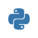

実装運用
第6章 ライブラリと部品の脆弱性：サプライチェーン
脆弱性のニュースの大半は、あなたが1行も書いていないコードの話です。フレームワーク、ライブラリ、言語のランタイム、OS、コンテナのベースイメージ。これらの「部品」に穴が見つかると、使っている全員に同時に効きます。この章では、部品の穴の情報を読み、自分への影響を確かめ、更新を日常の作業にする方法を扱います。
- ニュースの大半は部品の穴：自分が書いていないコードに穴が見つかり、使っている全員に効く
- 直接入れたライブラリが数十個でも、それらが連れてくる間接依存は数百個になる
- IPA 10大脅威 2026 の2位「サプライチェーンや委託先を狙った攻撃」、OWASP Top 10:2025 の A03「ソフトウェアサプライチェーンの不備」
- Log4Shell（2021年）は Java のログ出力ライブラリの穴で、世界中のシステムが一斉に対応を迫られた
- 脆弱性情報の読み方は3点：影響バージョンの範囲・修正版・攻撃条件
- 「使っているか」は lock ファイルと
npm ls／pipdeptreeで間接依存まで裏を取る - 第1章の3問（使っているか・届くか・直したか）で今日やるか決める
- 「使っているか」は lock ファイルと
- lock ファイルはコミットし、CI は
npm ci：lock がないと同じコードでも入る版が変わる - スキャンは CI で毎回：
npm audit、pip-audit、Trivy。High 以上で止める。除外するなら理由と期限を書く - 更新は自動で小さく頻繁に：Dependabot か Renovate。セキュリティ更新は即日、通常更新は週1でまとめて。放置 PR はゼロにする
- 部品は選んで入れる：メンテされているか・EoL でないか・名前が本物か（typosquatting）・
postinstallで何をするか・公式レジストリか - SBOM は部品表：「何が入っているか」に即答できる状態にしておく。署名と来歴（provenance）で改ざんを見破る
- コンテナも部品：公式の小さいベースイメージ、ダイジェストで固定、定期的に再ビルド、Trivy でスキャン
読み終えたら、本文を見ずに各項目を自分の言葉で説明できるか確かめてください。
- なぜニュースが多いか：部品の穴は全員に効く
- 脆弱性情報の読み方：CVE・NVD・JVN・GitHub Advisory
- lock ファイルと再現性
- スキャン：CI で毎回確かめる
- 自動更新：Dependabot と Renovate
- 部品の選び方：入れる前に見ること
- SBOM と署名：何が入っているかに即答する
- コンテナ：ベースイメージも部品
読む前の問い（答えを予測してから読み進め、読み終えたら答え合わせをしてください）
- 「ライブラリ〇〇に深刻な脆弱性」のニュースを見た。
package.jsonに〇〇が無ければ、自分には関係ないと言えるか。 package.jsonをコミットしていれば、package-lock.jsonはコミットしなくてもよいか。- Dependabot の PR が 40 件たまっている。何が問題か。
1. なぜニュースが多いか：部品の穴は全員に効く
現代のアプリは、自分で書くコードより他人が書いた部品のほうがはるかに多く含まれています。Web フレームワーク1つを入れると、それが必要とする部品、さらにその部品が必要とする部品、と連鎖します。これを依存関係の木と呼びます。
package.json に名前が無くても、使っていることがほとんどです。| 事例 | 何が起きたか（一行） | 教訓 |
|---|---|---|
| Log4Shell（2021年） | Java の広く使われるログ出力ライブラリ Log4j に、ログに書かれた文字列から任意コードを実行できる穴が見つかった | 「ただのログ」でも部品の穴で RCE になる。間接依存まで確認する仕組みが要る |
| xz-utils への不正コード混入（2024年） | Linux で広く使われる圧縮ライブラリに、メンテナーになりすました人物が長期間かけて裏口を仕込んだ | 部品そのものが改ざんされうる。署名・来歴・配布経路の確認が要る |
家を建てるとき、釘やネジや配線を自分で作る人はいません。市販の建材を使います。ある日「〇〇社の配線に発火の恐れ」と発表されたら、その配線を使った家すべてが対象になります。自分の家にどの建材が使われているかの一覧があれば、該当するかすぐ分かります。無ければ壁を剥がして調べることになります。
IPA「情報セキュリティ10大脅威 2026」組織向け2位「サプライチェーンや委託先を狙った攻撃」。OWASP Top 10:2025 A03 ソフトウェアサプライチェーンの不備（2021年版の「脆弱で古くなったコンポーネント」が拡張されたもの）。
2. 脆弱性情報の読み方：CVE・NVD・JVN・GitHub Advisory
部品の脆弱性は、CVE 番号で管理され、NVD（米国）・JVN（日本語）・GitHub Advisory Database（パッケージ単位で検索しやすい）で公開されます。どこで読んでも、確かめる項目は同じです。
| 項目 | どこを見るか | 自分の作業 |
|---|---|---|
| 影響を受けるパッケージと版の範囲 | 「< 4.17.21」「>= 2.0.0, < 2.3.1」のような表記 | 自分の lock ファイルの版と比べる。範囲に入っていれば「使っている」 |
| 修正版 | 「Patched versions: 4.17.21」 | この版以上に上げる。メジャー更新が必要なら回避策も探す |
| 攻撃条件 | 「攻撃者が制御する入力が〇〇関数に渡る場合」「認証不要」「ネットワーク経由」 | 自分のコードがその関数をどう使っているか。外からの入力が届くか（第1章の「届くか」） |
| 深刻度（CVSS） | 点数と、Critical／High／Medium／Low | High 以上は優先。ただし「届くか」とあわせて判断 |
| 回避策 | 「この設定を無効化すれば影響を受けない」 | すぐ上げられないときの一時対応 |
「使っているか」は package.json や requirements.txt を眺めるだけでは分かりません。間接依存まで含めて、実際に入っている版を確かめます。
シェル# npm：この部品を誰が連れてきているか（間接依存の経路が出る）
npm ls lodash
# 出力例：app@1.0.0 → some-lib@2.1.0 → lodash@4.17.15 ← 範囲に入っていれば影響あり
# Python：pipdeptree で逆引き（この部品に依存しているものを表示）
pip install pipdeptree
pipdeptree --reverse --packages requests
# 入っている正確な版
pip show requests | grep Version脆弱性情報を見たら、範囲（自分の版は入っているか）、修正版（どこまで上げるか）、条件（外から届く使い方をしているか）の3点だけ読み取ります。「使っているか」の答えは、記憶ではなく lock ファイルと npm ls で出します。
- 「広く使われる」→ 直接入れていなくても、間接依存で入っている可能性が高い。
npm ls 〇〇で確かめる。 - 「深刻な」→ CVSS を見る。RCE か、認証不要か。
- 「PoC 公開」→ 自動攻撃が数日で来る。範囲に入っていて外から届くなら今日中。
- 「各社が緊急対応」→ 自分も「使っているか・届くか・直したか」の3問で仕分けし、結論をチームに一言で共有する。
3. lock ファイルと再現性
package.json の "express": "^4.18.0" は「4.18.0 以上 5.0.0 未満のどれか」という範囲の指定です。範囲なので、今日と来月で入る版が変わります。lock ファイルは「実際に入れた正確な版」を全部記録し、誰がいつ入れても同じ構成になるようにします。
.gitignorepackage-lock.json # lock をコミットしていないGitHub Actions- run: npm install # 範囲内の最新を毎回解決。昨日通ったビルドが今日壊れるGitHub Actions- run: npm ci # lock と package.json が食い違えば失敗。lock どおりに入れるPython（pip-tools）# requirements.in に直接依存だけ書き、ハッシュ付きの requirements.txt を生成
pip-compile --generate-hashes requirements.in
# 入れるときはハッシュが一致しないと失敗する
pip install --require-hashes -r requirements.txt| エコシステム | lock ファイル | CI で使うコマンド |
|---|---|---|
| npm | package-lock.json | npm ci |
| pnpm ／ yarn | pnpm-lock.yaml ／ yarn.lock | pnpm install --frozen-lockfile ／ yarn install --immutable |
 Python | poetry.lock、uv.lock、ハッシュ付き requirements.txt | poetry install、uv sync --locked、pip install --require-hashes -r requirements.txt |
| Ruby | Gemfile.lock | bundle install（BUNDLE_FROZEN=true） |
| Go ／ Rust | go.sum ／ Cargo.lock | go mod verify ／ cargo build --locked |
| Java | Gradle の gradle.lockfile（依存ロックを有効化）、Maven は版を固定して書く | 通常のビルド。ロック外の解決を失敗にする設定を入れる |
- 「
package.jsonをコミットしていれば十分」→ 範囲の指定なので、入る版は日によって変わります。lock もコミットします。 - 「lock があれば更新しなくてよい」→ 逆です。lock は固定するためのもので、固定したまま放置すると脆弱な版が残ります。固定＋自動更新（5節）がセットです。
- CI で
npm installを使うと lock が書き換わることがあります。CI はnpm ci。
4. スキャン：CI で毎回確かめる
lock ファイルに記録された版を、脆弱性データベースと突き合わせるのが依存関係スキャンです。人の記憶ではなく、CI が毎回やります。
| ツール | 対象 | コマンド |
|---|---|---|
| npm audit | npm の依存 | npm audit --audit-level=high（High 以上があれば失敗） |
| pip-audit | Python の依存 | pip-audit -r requirements.txt、または環境に対して pip-audit |
| bundler-audit | Ruby の依存 | bundle audit check --update |
| OWASP Dependency-Check | Java などを含む複数言語 | Maven／Gradle プラグイン、CLI |
| Trivy | lock ファイル、コンテナイメージ、IaC、OS パッケージをまとめて | trivy fs --severity HIGH,CRITICAL --exit-code 1 . |
| GitHub Dependabot alerts | リポジトリの依存グラフ | 設定で有効化。該当すると通知と修正 PR が来る |
| Snyk など SaaS | 複数言語・コンテナ・IaC | CI 連携。無料枠あり |
.github/workflows/audit.ymlname: audit
on: [push, pull_request]
jobs:
audit:
runs-on: ubuntu-latest
steps:
- uses: actions/checkout@v4
- uses: actions/setup-node@v4
with: { node-version: 22, cache: npm }
- run: npm ci
- run: npm audit --audit-level=high # High 以上が1件でもあれば、このジョブは失敗する
- uses: aquasecurity/trivy-action@master # 本番ではバージョンかコミット SHA で固定する（第7章 7.）
with: { scan-type: fs, severity: "HIGH,CRITICAL", exit-code: "1" }誤検知と「その経路は使っていない」の扱い
スキャンは「その版に穴がある」ことしか見ません。実際には「その関数を使っていない」「その機能を無効化している」ことがあります。そうした場合に黙って除外すると、半年後に誰も理由を思い出せません。除外は、理由と期限を書くのが約束です。
.trivyignore# CVE-XXXX-NNNNN: 影響を受ける XML 解析機能は本アプリでは無効化している（確認: 2026-10-20 田中）
# 修正版 3.2.0 への更新は 2026-11 のメジャー更新で対応する。期限を過ぎたら再評価
CVE-XXXX-NNNNN exp:2026-11-30- 今日：自分のリポジトリで
npm audit（またはpip-audit）を1回回す。出た High 以上を「使っているか・届くか・直したか」で仕分けして、1件だけ直す。 - CI：上の YAML のように、High 以上で失敗する検査を1つ入れる。最初から全部赤になるなら、まず Critical だけで止めて、段階的に下げる。
- レビューで言う一言：「lock は更新されていますか？ audit は通りましたか？」「この除外、理由と期限は書いてありますか？」
5. 自動更新：Dependabot と Renovate
スキャンで見つけてから直すより、見つかる前から少しずつ上げ続けるほうが楽で安全です。更新をためると、差分が大きくなって上げられなくなり、そのまま EoL まで放置されます。更新の PR を自動で作るツールが Dependabot と Renovate です。
.github/dependabot.yml を置くだけで動く。依存の更新 PR と、脆弱性のある版の通知（alerts）を出す。GitHub Actions やコンテナのベースイメージも対象にできる。renovate.json に config:recommended を書くところから始める。.github/dependabot.yml（最小の例）version: 2
updates:
- package-ecosystem: "npm"
directory: "/"
schedule:
interval: "weekly" # 週1回まとめて PR を作る（セキュリティ更新は随時）
groups:
minor-and-patch: # マイナー・パッチ更新は1本の PR にまとめる
update-types: ["minor", "patch"]
- package-ecosystem: "github-actions" # CI で使う Actions 自体も部品
directory: "/"
schedule:
interval: "weekly"renovate.json（最小の例）{
"$schema": "https://docs.renovatebot.com/renovate-schema.json",
"extends": ["config:recommended"]
}| 運用ルールの例 | 内容 |
|---|---|
| セキュリティ更新は即日 | 脆弱性に対応する PR は、テストが通れば当日マージする。担当を決めておく。 |
| 通常の更新は週1でまとめて | 決まった曜日に、たまった PR をまとめて確認・マージする。グループ化で PR の数を減らす。 |
| メジャー更新は計画的に | 破壊的変更を含むので、変更履歴を読んで作業時間を取る。放置せず、四半期に1回は棚卸しする。 |
| テストがあることが前提 | 自動更新を安心してマージするには、CI でテストが回ることが要る。テストがない部分は、更新のたびに手で確認する範囲を決めておく。 |
| 放置 PR をゼロに | 40 件たまった PR は誰も見ない。たまる前に設定（頻度・グループ化・上限）を見直す。 |
PR が作られるだけでは何も変わりません。マージされて初めて穴がふさがります。「有効にしてある」ではなく「先週何件マージしたか」で見ます。CI で使う GitHub Actions 自体やコンテナのベースイメージも更新対象に入れます。
6. 部品の選び方：入れる前に見ること
部品は入れた瞬間から、更新と脆弱性対応の義務が付いてきます。「便利そう」で入れる前に、次を見ます。
| 見ること | 判断 |
|---|---|
| メンテされているか | 最終更新が1年以上前、issue が放置、メンテナーが1人。更新が止まった部品は脆弱性が直らない。代替を探す。 |
| EoL でないか | 言語・フレームワーク・DB・OS のサポート期限は endoflife.date で確認する。EoL のものは選ばない。使っているものは EoL の前に上げる計画を持つ。 |
| 名前が本物か | typosquatting（1文字違いの偽物）。公式サイトからリンクされた名前をコピーして入れる。ダウンロード数と公開日を見る。 |
| 社内パッケージ名が公開レジストリにないか | 依存関係の混乱への対策。社内パッケージはスコープ（@mycompany/…）を付け、レジストリの設定で取得元を固定する。 |
| インストール時に何を実行するか | npm の postinstall スクリプトは、入れた瞬間に任意のコードを動かせる。見知らぬ部品はスクリプトの中身を見る。CI では npm ci --ignore-scripts も検討する（動かなくなる部品もあるので確認）。 |
| 公式レジストリから入れているか | GitHub の URL や個人のミラーから直接入れない。lock の整合性ハッシュで中身を固定する。 |
| 本当に要るか | 数行で書ける処理のために依存を増やさない。部品が1つ増えるごとに、間接依存と更新の手間が増える。 |
メンテが生きてるか、サポート期限内か、名前が本物か、インストール時の中身（スクリプト）は何か。4つ見てから入れます。
7. SBOM と署名：何が入っているかに即答する
SBOM は「部品表」です。脆弱性のニュースが出たとき、「うちは入っているか」に即答できることが目的です。lock ファイルも簡易な部品表ですが、SBOM は標準形式（CycloneDX、SPDX）で、コンテナの OS パッケージまで含めて出力でき、取引先への提出にも使えます。
シェル# npm 9.5 以降：CycloneDX 形式の SBOM を出力
npm sbom --sbom-format cyclonedx > sbom.json
# Trivy：ディレクトリやコンテナイメージから SBOM を出力
trivy fs --format cyclonedx --output sbom.json .
trivy image --format cyclonedx --output sbom.json myapp:1.2.3
# 作った SBOM を脆弱性データベースと照合する
trivy sbom sbom.json部品そのものの改ざん（xz-utils の事例）に対しては、署名と来歴（provenance）で「誰が、どのソースから、どのビルド環境で作ったか」を確かめる仕組みが広がっています。Sigstore（cosign）、npm の provenance（npm publish --provenance）などです。利用者としては「署名・来歴が付いている部品を選び、検証を CI に入れる」が目標です。まずは SBOM を出せる状態から始めます。
8. コンテナ：ベースイメージも部品
Docker イメージは「OS のパッケージ ＋ 言語のランタイム ＋ 自分のアプリ」の全部入りです。FROM で指定するベースイメージは巨大な部品であり、同じように穴が見つかり、同じように更新が要ります。
DockerfileFROM node:latest # 毎回違うものが入る。何が入ったか分からない
COPY . .
RUN npm install # lock を無視。開発用の部品まで入る
CMD ["node", "server.js"] # root で動くlatest は再現性がなく、ビルドのたびに中身が変わります。Dockerfile# 公式の slim（または distroless／alpine）を、タグ＋ダイジェストで固定。Renovate が更新 PR を出す
FROM node:22-slim@sha256:<ダイジェスト>
WORKDIR /app
COPY package*.json ./
RUN npm ci --omit=dev # lock どおり。開発用の部品は入れない
COPY . .
USER node # root で動かさない（第7章 6.）
CMD ["node", "server.js"]| やること | 内容 |
|---|---|
| 小さい公式イメージ | -slim、-alpine、distroless。入っている部品が少ないほど穴も少ない。 |
| ダイジェストで固定 | node:22-slim@sha256:…。タグだけでは中身が変わりうる。更新は Renovate／Dependabot に任せる。 |
| 定期的に再ビルド | アプリのコードが変わらなくても、ベースイメージと OS パッケージの修正を取り込むために週1などで再ビルドして配備する。 |
| イメージをスキャン | trivy image --severity HIGH,CRITICAL --exit-code 1 myapp:1.2.3 を CI に。OS パッケージと言語の部品を両方見る。 |
| root で動かさない | USER を指定する。読み取り専用ファイルシステムなどの実行時の設定は第7章 6.。 |
- 何が入っているか：
docker history myapp:1.2.3で層を見る。trivy image myapp:1.2.3で OS パッケージと言語の部品の脆弱性を一覧にする。 - 誰で動いているか：
docker run --rm myapp:1.2.3 idでuid=0(root)と出たら、USERの指定が抜けている。 - レビューで言う一言：「
FROMはダイジェストで固定されていますか？ 最後に再ビルドしたのはいつですか？」
この章のコマンドは、自分のリポジトリ・自分のイメージに対して使うものです。他社の公開サービスの部品や版を調べて穴を探す行為は、たとえ更新を促す目的でも、不正アクセス禁止法などに触れる可能性があります。気づいたことは、その組織の脆弱性報告窓口や IPA の届出制度を通じて伝えます。
- OWASP Cheat Sheet Series：Vulnerable Dependency Management、NPM Security、Docker Security
- OWASP Top 10:2025 A03 ソフトウェアサプライチェーンの不備
- IPA 情報セキュリティ10大脅威 2026
- GitHub Docs Dependabot、Renovate Docs
- endoflife.date（サポート期限の一覧）、JVN、GitHub Advisory Database
- 直接依存・間接依存
- 自分で
package.jsonなどに書いて入れた部品が直接依存。それらが必要として連れてくる部品が間接依存（推移的依存）。 - lock ファイル
- 間接依存を含む全部品の正確な版と整合性ハッシュを記録したファイル。コミットして、CI は lock どおりに入れる。
- 整合性ハッシュ
- 部品の中身のハッシュ値。lock の値と違えば、改ざんや差し替えとして失敗する。
- 依存関係スキャン（SCA）
- 部品と版を脆弱性データベースと照合する自動検査。npm audit、pip-audit、Trivy。
- typosquatting
- 有名なパッケージと1文字違いの名前で悪意あるパッケージを公開し、打ち間違いで入れさせる手口。
- 依存関係の混乱
- 社内パッケージと同名のものを公開レジストリに置き、ツールにそちらを優先させる手口。スコープと取得元の固定で防ぐ。
- postinstall
- npm がパッケージを入れた直後に実行するスクリプト。任意のコードが動くので、見知らぬ部品は中身を見る。
- SBOM
- ソフトウェアの部品表。CycloneDX・SPDX 形式。「何が入っているか」に即答するためのもの。
- 来歴（provenance）
- その部品が、誰が、どのソースから、どのビルド環境で作ったかの記録。署名とあわせて改ざんを見破る。
- ベースイメージ
- Dockerfile の
FROMで指定する土台。OS と言語ランタイムを含む巨大な部品。 - ダイジェスト
- コンテナイメージの中身のハッシュ（
sha256:…）。タグと違い、同じダイジェストなら中身は必ず同じ。
🧠 想起練習
本文を見ずに答えを思い出してから、各項目を開いて確認してください。
部品の脆弱性がニュースになりやすい理由を、依存関係の木で説明してください。
Log4Shell（2021年）と xz-utils（2024年）の教訓をそれぞれ一言で。
脆弱性情報で読み取る3点は？「使っているか」はどう裏を取るか。
npm ls 〇〇／pipdeptree --reverse で間接依存まで確かめる。package.json の ^4.18.0 はどういう意味か。なぜ lock ファイルが要るか。
CI で npm install ではなく npm ci を使う理由は？
npm ci は lock どおりに入れ、lock と package.json が食い違えば失敗する。npm install は範囲から解決し lock を書き換えることがある。依存関係スキャンのツールを3つと、CI での止め方は？
npm audit --audit-level=high、trivy fs --severity HIGH,CRITICAL --exit-code 1）。スキャン結果を除外するときの約束は？
Dependabot／Renovate の運用ルールの例を3つ。
部品を入れる前に見る4つは？
SBOM とは何か。目的は？
npm sbom や trivy で出力できる。